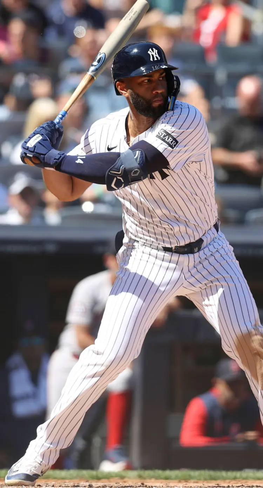

Amed Rosario
Career Highlights & Facts
(Facts are AI-generated and may require verification)
- Possesses versatility as a utility player capable of handling multiple defensive roles.
- Entered professional baseball as an amateur free agent signing.
- Accumulated over 1,000 hits during a career spanning multiple leagues.
Would you like to find out more about Amed Rosario?
Read Player Biography
Amed Rosario
April 15, 2024
/
in
/
by
admin
This bio is not assigned. Want to write a SABR bio? Contact
bioproject@sabr.org
.
Full Name
German Amed Rosario Valdez
Born
November 20, 1995 at Santo Domingo Centro, Distrito Nacional (Dominican Republic)
Stats
Baseball Reference
Retrosheet
Tags
None
Wikipedia Summary:
Germán Amed Rosario Valdez is a Dominican professional baseball utility player for the New York Yankees of Major League Baseball (MLB). He has previously played in MLB for the New York Mets, Cleveland Indians/Guardians, Los Angeles Dodgers, Tampa Bay Rays, Cincinnati Reds, and Washington Nationals. He made his MLB debut in 2017 with the Mets.
Career Totals
| WAR | AB | H | HR | BA | R | RBI | SB | OBP | SLG | OPS | OPS+ |
|---|---|---|---|---|---|---|---|---|---|---|---|
| 10.0 | 3768 | 1028 | 73 | .273 | 479 | 405 | 110 | .307 | .401 | .709 | 96 |
Statistics via Baseball-Reference.com
The Original Clue